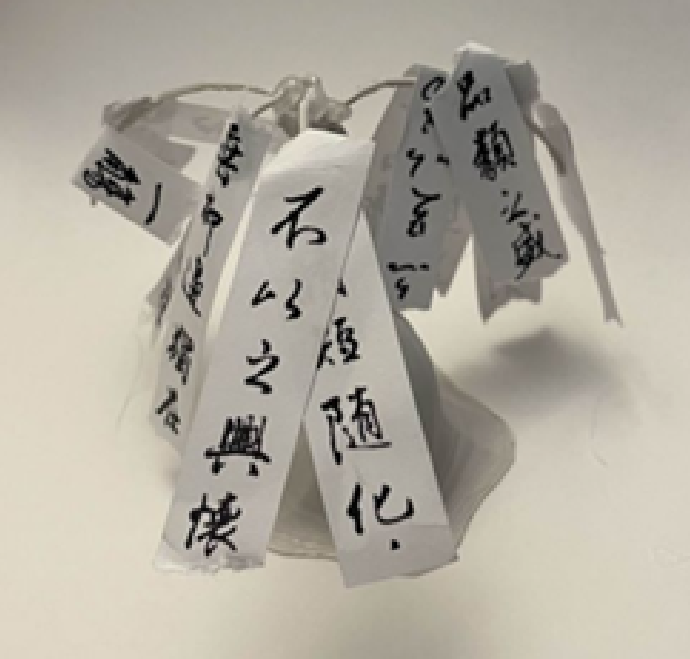

Wish Willow
A kinetic sculpture study exploring how engineered materials can carry an organic, living feeling. Inspired by willow trees swaying in the wind and the cultural tradition of wish trees in northern China, the piece uses a manufactured tree form with an internal joint-and-tendon structure.